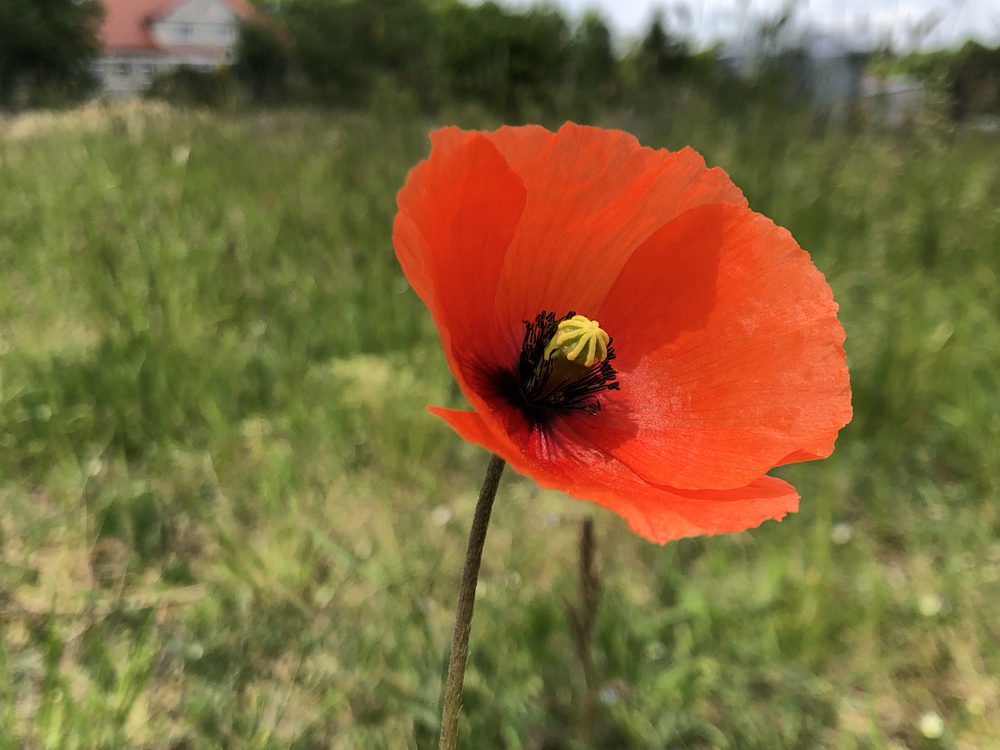

Mak
Mak to roślina oleista, rodzimy dla Eurazji, Afryki i Ameryki Północnej. Zalicza się do niego w
zależności od ujęcia od ok. 70 do ok. 100 gatunków

Niezapominajki
Niezapominajki spotykane są na wszystkich kontynentach z wyjątkiem Antarktydy. Najbardziej
zróżnicowane są w dwóch oddalonych od siebie obszarach – w basenie Morza Śródziemnego i na Nowej Zelandii. W
Europie, w większości w jej części południowej, rośnie 41 gatunków. W Turcji rosną 23 gatunki, a w Nowej Zelandii
– 33.